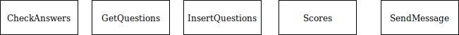
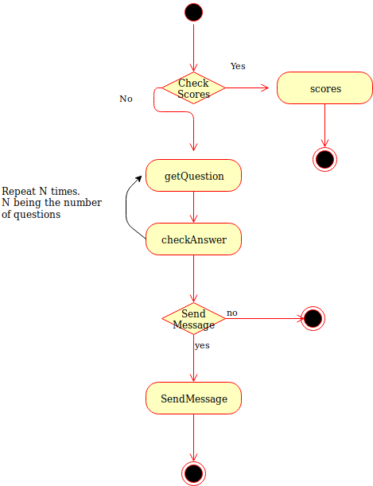
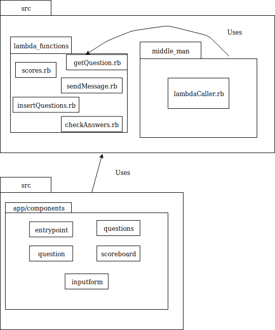
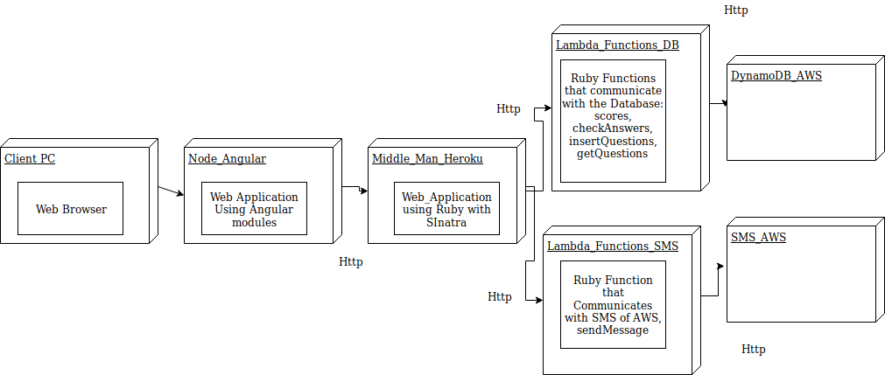
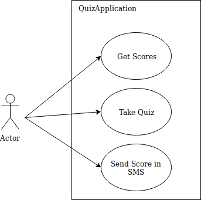

Application Design and Architecture¶ ↑
| Authors |
Arturo Velazquez Rios,Isain Cuadra Rivas,Diego Canizales Bollain Goytia |
| Date |
May 14, 2019 |
Overview of the Project¶ ↑
The structure of this project is at follows:
quiz/
├─ doc/ Folder produced by RDoc.
├─ img/ Folder for the documentation’s image files.
└─ src/ Folder for the application’s source code.
├─ lambda_functions/ Folder for the functions that will use the Lambda feature in AWS.
├─ middle_man/ Folder for the server that is in charge of calling the Lambda functions.
For this application we divide it into 3 three parts. These are front-end, middle-man and back-end. The front-end was built using Angular and communicates directly to the middle_man to make different requests depending on what the user wants to use. The middle_man is built with Sinatra and is in charge of communicating with the different Lambada functions that we have setup in AWS. The folder contains the different functions we used in AWS. Take notice that each file will be in it's own Lambda Function instance.
Installing and Running the Application¶ ↑
Front End: For the Front end we are using Angular as a framework to do all the graphical interface. To install the dependecies for the project we need to install it with npm:
$ npm install.
To start the server locally we need the angular dependecy from the cli package. So we need to wait until all the dependecies are installed in the target enviroment. After that run the next command:
$ ng serve
This will create a server in the port 4200. If you are running locally you can visit the project at localhost:4200
Middle Man: For the middle man we require to have Ruby 2.3 or more recent versions of it. Second in the enviroment that will run the middle man requires that Sinatra gem is installed. To run the server instance we need to type this command:
$ ruby -I . -w lambdaCaller.rb
Back End:
The different functions that we use to communicate with the Database and gives the functionality to our front end are mounted in AWS Lambda Function.The configuration of each function is using Ruby 2.5 as the the base enviroment. Also each instance has a service key that is required to make requests to each fucntion. Each file has it's own instance of AWS Lambda function. Therefore to run these files we just require to create differente instances and paste the code.
4+1 Architectural View Model¶ ↑
Logical View¶ ↑
We can represent the different sections we mentioned early using simplified UML diagrams. For the different Lambda Functions it will be represented as an Object that it has different functions in them. Is not class per say , but an object is the best way to represent the Lambda FUnctions. As we can see all the functions are in the same level because we treat them the same way.

The middle man we only use the LambdaCaller file with Sinatra which it is a DSL pattern. Because is only one file there is not a need for a diagram.
Process View¶ ↑
In the next diagram we can see the different process that the user can take using the front end project. The user can be taken into different experiences and in each experience we will call a different Lambda Function using the middle-man:

Development View¶ ↑
As we can see in the Development View we separated the front end from the back end. In matter of fact something we can see is that the front end can be changed depending on the level of security we want on the project. We can change the URLs to the ones from the lambda functions and it will still work. Yet we have our middle man because it can help us on keeping our security keys safe and not exposed in the front end code:

Physical View¶ ↑
As we can see in the physcial view we use several technologies to mount our different services. We use Heroku and AWS to have our different services up and running in theri respectives domains. The next figure shows how the different services communicate with each other.

Scenarios¶ ↑
The diagram shows us that the user is able to interact with the application in three different ways. Also the user doesn't require a third system or a thir person so he is able to interact with all the functionalities inside the system. HEre are the three scenarios for our quiz application:

Patterns Used¶ ↑
-
Domain-Specific Language: The
lambdaCaller.rbfile consists of a web application with different routes for each functionality.
Sinatra is a DSL for creating web applications in Ruby.
-
Model-View-Controller: The application foolows a classical Architecture of MVC for each question asked on the quiz.
-
Microservices: The application relies heavily on microservices to get the correct data.
References¶ ↑
-
E. Gamma, R. Helm, R. Johnson, J. M. Vlissides. Design Patterns: Elements of Reusable Object-Oriented Software. Addison-Wesley, 1994.
-
A. Harris, K. Haase. Sinatra: Up and Running. O’Reilly, 2011.
-
Ph. Kruchten. The 4+1 View Model of Architecture. IEEE Software, vol. 12 (6), pp. 45-50, 1995. http://www.ics.uci.edu/~andre/ics223w2006/kruchten3.pdf Accessed April 11, 2019.
-
R. Olsen. Design Patterns in Ruby. Addison-Wesley, 2007.
-
Ruby-Doc.org. RDoc Markup Reference. http://ruby-doc.org/stdlib-2.6.2/libdoc/rdoc/rdoc/RDoc/Markup.html Accessed April 11, 2019.